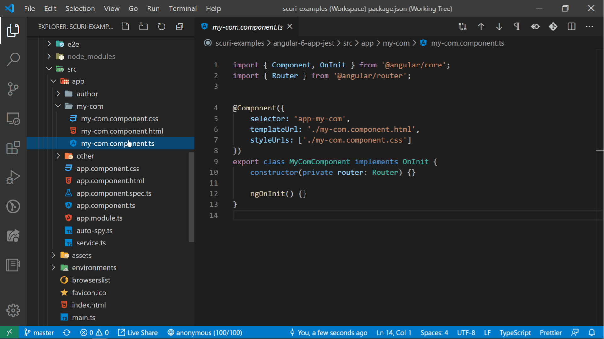

Georgi Parlakov
üë©‚Äçüíª Angular and DotNet dev. RxJs üî≠ explorer . Author ‚úç
indepth.dev
medium.com
dev.to. Testing üëç proponent. A dad ❤.
SCuri
npm
GitHub
Auto generate and update your Angular project unit tests. Using Schematics and Typescript API

SCuri for VS Code
VS Marketplace
GitHub
Work with SCuri from the comfort of your VS Code editor
Show Form Control (ngx-show-form-control)
npm
GitHub
Angular dev tool to live visualize and edit your forms! Prod environment safe!
Forms Typed (ngx-forms-typed)
npm
GitHub
Strongly typed Angular forms!
If you like my stuff üëá
 Buy me a coffee
Buy me a coffee
Scroll to top